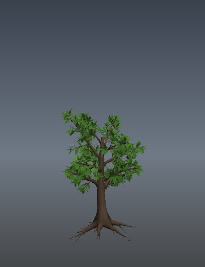
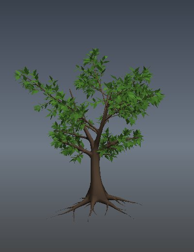
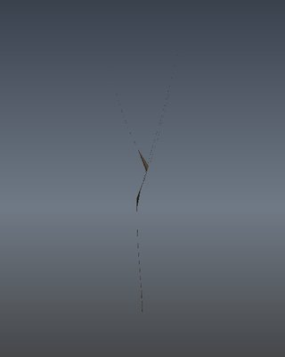
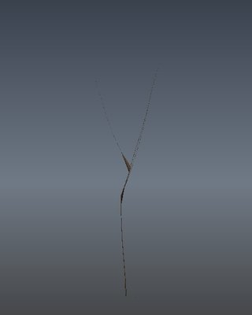
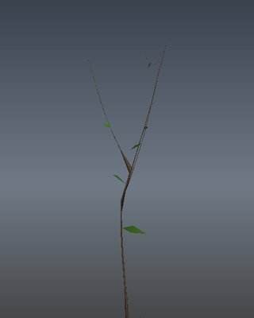
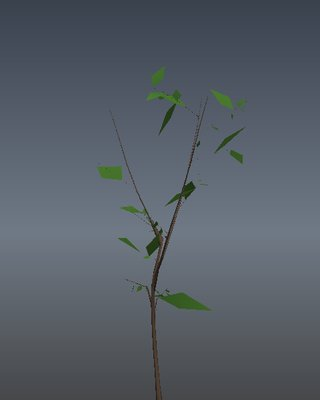
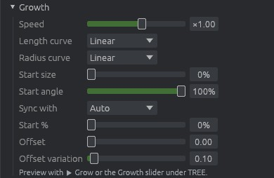

Growth animation
A tree can grow in your game: from nothing to the mature tree you designed, through stages such as Sprout, Sapling, Young and Mature. ArborStudio grows the tree the way trees grow: as a whole, every branch, twig and leaf a little each season, so a young tree is a small tree in its mature proportions that fills out and gets denser, not a bare pole that sprouts branches later. You tune this per generator. The growth is animated on the tree's own mesh and exported as morph targets with one animation clip per stage, which Godot, Unity and Unreal play without a plugin.




The Oak preset at five points of its growth with the default growth settings. Each picture is framed to the tree's size at that point, so the young tree's shape is visible; the sprout is about a tenth of the mature tree's height.
What a very young tree looks like




The Oak preset close up at low growth values, each picture framed to the young tree. Below about 0.1 the tree is a small sapling: the trunk and its leaders have their final shape and proportions, side branches are short stubs and there are no leaves yet. Where the trunk splits, the base of the fork shows as a small pointed swelling, a smaller copy of its final base. From about 0.1 the first leaves come out, a little smaller than mature leaves, and side shoots become visible; roots appear as short spurs at the base. Seen from the mature tree's distance, a tree below 0.1 is only a few pixels tall, so the first stage of a growth clip usually starts around 0.1. To see any point yourself, scrub the Growth slider, or ask an agent for render_preview with growth and a close target and distance.
How a tree grows
Growth runs from 0 (nothing above the ground) to 1 (the tree as designed). On the way:
- The whole tree grows at once. In a real tree, every bud makes a new shoot each season, so the trunk, the branches and the twigs all grow at the same time. A young tree is a small tree with branches of its own, not a bare pole.
- Every stem (trunk, branch, twig, root) keeps the shape it has in the mature tree and grows in size, and what grows on it stays at the same place along it. A branch's bud breaks a little after its parent's, lower buds first, and the branch grows to its share of the parent's size while the parent keeps growing. Real trees shed their lowest branches as they get taller; with the fixed set of branches of a game model, the crown keeps its share of the tree's height instead.
- A young stem has its mature proportions: with the default curves the thickness grows as the length does, as a sapling's does (a 0.8 m birch sapling is about 15 mm thick at the foot). The radius curve against the speed curve makes young stems slimmer or stouter. A branch is never thicker, relative to its final size, than its parent where it comes out.
- Sync with, Start % and Offset with a random Offset variation can make parts start later instead. Nothing ever starts before its parent.
- Where a branch is joined to its parent (Branch joints), the opening in the parent's bark closes over the bark (it never cuts into the wood) and opens only as far as the branch is thick, so the bark stays closed before the branch starts and while it grows. A twig that comes out right at the base of a branch moves with that branch's joint. Where openings sit side by side they close only part of the way, and the young branch's base, a smaller copy of its final base ending in a pointed tip, covers the rest. Every copy of a point in the mesh (texture seams, the strip that stitches a branch on) moves as one, so the bark never cracks open.
- Leaves come out with the young shoots and keep coming over the whole growth: a few with the young trunk, some with the branch below their twig, most once their twig is out. Even a seedling has leaves, and the crown gets denser as the tree grows instead of filling in from the bottom up. A young tree's leaves are a little smaller. They can also turn into place.
- A trunk or branch that splits into leaders has its split from the start.
- Roots keep the trunk's proportions where they join it, so the young trunk stands on its root flare.
This follows plant science and computer graphics research: shoots that keep growing along smooth growth curves (Prusinkiewicz, Hammel and Mjolsness, Animation of Plant Development, 1993), every bud growing a new shoot each season so all branch orders grow together (Palubicki and others, Self-organizing tree models, 2009), and secondary growth, which thickens stems for as long as the tree lives.
The whole growth is scaled so it ends at 1 when the last part is done. The mesh never changes its triangles; only its points move. At 1 it is exactly the tree you export without growth. This is what lets engines play the growth as morph targets (also called blend shapes or shape keys).
Age in Tree settings is different: it grows a new, younger tree with fewer branches, as a separate model. The growth animation always ends at the tree you designed.
Growth settings per generator
Select a generator and open Growth at the end of its properties. Every generator has these settings; the defaults give the growth shown above.

| Setting | For | Range | Meaning |
|---|---|---|---|
| Speed | all | ×0.05–×10 | How fast this generator's parts grow. Trunk: at ×1 it reaches its full size at the end of the growth. With Sync Auto, at ×1 a branch reaches its full size relative to its parent in a quarter of the trunk's time; ×2 in half that. With the other syncs it is relative to the trunk's pace: at ×1 a branch as long as the trunk takes as long as the trunk. Leaves unfold in about a seventh of the trunk's time at ×1. |
| Size curve | all | Linear, Ease in, Ease out, S-curve | How the size grows over the part's own growth: steadily, slow at first, slow at the end, or slow-fast-slow. On the trunk it sets how the whole tree's height grows; real trees grow slowly as seedlings, fastest when young and slowly when old (S-curve). |
| Radius curve | trunk, branches, roots | Linear, Ease in, Ease out, S-curve | How the radius grows, against the speed curve: the same curve keeps the stem's mature proportions. Ease in makes young stems slimmer, Ease out stouter (at most twice). |
| Start size | all | 0–100% | The size a part has as soon as it appears. 0 grows it from nothing; higher values make parts pop in partly grown. |
| Start angle (leaves: Start orientation) | branches, roots, leaves | 0–100% | Below 100%, branches start folded towards their parent and fold out as they grow; leaves start lying along their twig and turn into place. |
| Orientation time | leaves | ×0.1–×5 | How long leaves take to turn into place, relative to unfolding. |
| Sync with | branches, roots, leaves | Auto, Parent, Siblings, Parent's start and end, In place | Auto (default): the whole tree grows at once, as described above. Parent: start Start % of the way through the parent's growth. Siblings: all of this generator's parts start together, Start % between as early and as late as all of them can. Parent's start and end: start and finish with the parent. In place: when the parent has grown to the spot. |
| Start % | with Parent or Siblings | 0–100% | 0 starts as early as possible, 100% as late. |
| Offset | branches, roots, leaves | 0–3 | A delay added to every start, in shares of the trunk's growth time. |
| Offset variation | branches, roots, leaves | 0–3 | A random extra delay of up to this much per part, so neighbours do not all start at once. |
Examples: for a tree whose crown fills in late, give the twigs Start % 60%. For leaves that come out all together in spring, set the leaves to Siblings. For a tall, slim sapling, give the trunk Radius curve Ease in.
Previewing the growth
Click ▶ Grow in the toolbar to play the growth in the viewport. The Growth section at the end of the Properties panel has the same button, a slider to scrub through the growth, and one button per stage to jump to it. The viewport header shows the point of the growth and the stage, for example Growth 38% (Sapling). Wind plays during the growth too.

Stages
Stages are the moments of the growth your game uses; exports get one clip per stage. Click a stage's button to show the tree there and edit it:
- + Stage adds a stage where the preview slider stands (or in the middle of the largest gap when a stage is already there). Move the slider first to add a stage at a chosen point. Up to 8 stages.
- Name is optional. A stage without a name is called by its place, for example Stage 2; that label is also its clip and file name in exports.
- At moves the stage along the growth; Remove deletes it.
Settings
| Setting | Range | Meaning |
|---|---|---|
| Stages | up to 8, each 0.01–1 | Moments of the growth, in growing order, each with an optional name. The last stage is normally the mature tree at 1. |
| Duration | 0.5–600 s | How long the whole growth takes in the exported animation and the preview. |
| Keyframes | 4–48 | How many shapes the growth is sampled at. Every stage always gets one. More keyframes play more smoothly and make larger files. |
| Export | on, off | Exports include the growth animation. |
What gets exported
Turn on Include the growth in exports, then export as usual (Exporting). Levels of detail and the billboard grow along with LOD0.
| Format | Growth |
|---|---|
| GLB | Every mesh level gets one morph target per keyframe (morph target k is the tree at keyframe k; all weights 0 is the mature tree), and animations that drive the morph weights: Grow from nothing to the mature tree, and one clip per stage: the first stage's clip grows from nothing to it (Sprout), the others from the stage before (Sprout to Sapling, Sapling to Young, …). The file's extras list the stages, keyframes and clip times under growth. |
| OBJ | One more file per stage before the mature tree, for example oak_Sprout.obj and oak_Sapling.obj, for engines or tools that swap static models. |
| JSON | When every stem and leaf starts and how long it grows (growth.timing), with each generator's growth settings, for your own engine code or plugins. |
The GLB meshes also get a skin with a single bone that moves nothing. Some engines, Unreal among them, keep morph targets only on skinned meshes; the bone makes them import as such.
Between two keyframes an engine blends the points in straight lines, so a part that appears between them grows in a little less exactly than in the preview. More keyframes follow the preview more closely. Each keyframe stores every point of the mesh once more: with 16 keyframes, the Oak preset with all levels and the billboard is about 15 MB as GLB instead of about 4 MB.
In the engine
- Godot 4: the imported scene has an AnimationPlayer with Grow and the stage clips. Play a clip to grow to the next stage, or seek Grow to a time to show a stage. Tested by importing an exported Oak in Godot 4: the blend shapes per level and the five clips arrive.
- Blender: the meshes arrive with shape keys and one action per clip. Tested by importing and rendering the Grow action.
- Unity: with a glTF importer package (for example glTFast), the meshes import with blend shapes on a SkinnedMeshRenderer and the clips as animations.
- Unreal: import the GLB as a skeletal mesh; the morph targets and the clips' morph curves come with it.
Unity and Unreal were not tested with these files yet.
Regrowing a tree (after it was cut down, for example) is the same animation played again from the start.
Growth for agents
Each generator's growth settings are in its parameters under growth: update_generator with params.growth (speed, speed_curve, radius_curve, start_size, start_angle, orientation_time, sync, start_pct, offset, offset_variation). set_growth changes the stages, duration, keyframes and the export default, and returns the keyframes and the clips with their lengths in seconds. render_preview and set_view take growth (0–1) or growth_stage (a stage name or label such as Stage 2); set_view also takes growth_playing. export_tree and export_variations take include_growth.
update_generator {"id": 5, "params": {"growth": {"sync": "parent", "start_pct": 0.6, "offset_variation": 0.2}}}
set_growth {"stages": [{"name": "Sprout", "at": 0.1}, {"name": "Sapling", "at": 0.35}, {"at": 0.7}, {"name": "Grown", "at": 1}], "duration": 20}
render_preview {"growth_stage": "Sapling"}
export_tree {"path": "/path/to/Assets/oak.glb", "include_lods": true, "include_growth": true}